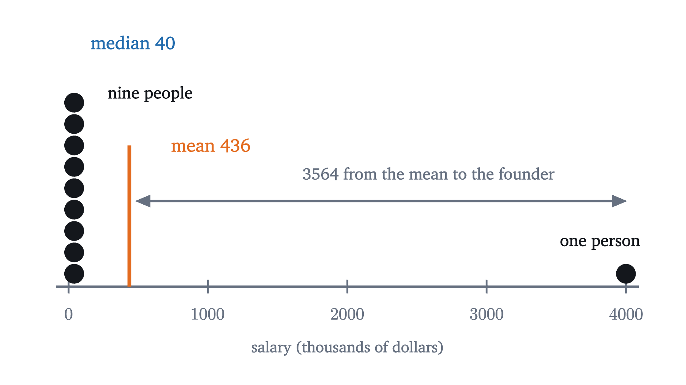
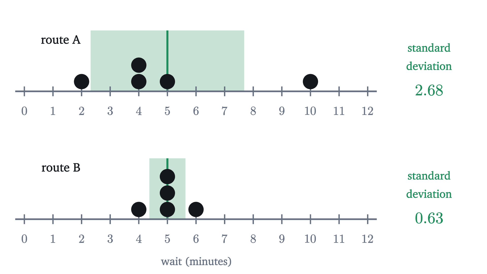
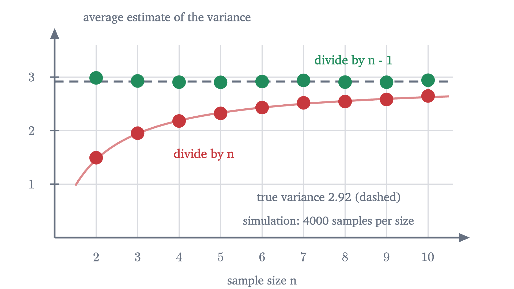

Mean, median and standard deviation: what each one says
The mean is a balance point, the median is a middle, and the standard deviation is a typical distance. Each is the best answer to a precise question.
A small company has ten employees. Nine of them earn $40,000 a year and the founder pays herself $4,000,000. A recruiter tells you, truthfully, that the average salary there is $436,000.
The arithmetic is fine: nine times 40 plus 4000 is 4360 thousand, and dividing by ten gives 436 thousand. Yet nobody at the company earns anything close to that. Nine people earn less than a tenth of it and one earns nine times as much.
So what should a summary of a list of numbers be? There are several standard answers, and they disagree. This lesson proves that each is the best possible answer to a specific question, so that choosing between them becomes a matter of choosing the question.
The mean is a balance point
Ten salaries are awkward to compute with, so I will build the ideas on a smaller data set and come back to the company. On five mornings I waited for a bus, and the waits in minutes were
The mean is the total divided by the count: $\frac{2 + 4 + 4 + 5 + 10}{5} = \frac{25}{5} = 5$ minutes. One way to read it: if all five waits had been equal and had added up to the same 25 minutes, each would have been 5.
The figure at the top gives a second reading. Put a weight on a beam at each data value and look for the place where the beam balances. A weight pulls its side down in proportion to its distance from the pivot, so the beam is level when the distances on the left add up to the same as the distances on the right. With the pivot at 5, the left side has distances $3, 1, 1$, which total 5, and the right side has the single distance 5. The value sitting on the pivot contributes nothing.
In symbols, write $x_1, \dots, x_n$ for the data and call $x_i - c$ the deviation of $x_i$ from a number $c$. Deviations are signed: negative to the left of $c$ and positive to the right. Balance at $c$ means that the deviations add up to zero.
The theorem also explains the recruiter’s number. A weight far out on a beam has a long lever arm, so one salary of 4000 on the right needs a great deal on the left to hold it level. Nine salaries sitting close together cannot provide that unless the pivot moves a long way toward the heavy end.

The median is the middle
A different summary ignores how far away the values are and only asks about their order. Sort the data and take the value in the middle. For the bus waits, already sorted, the third of the five is 4.
Either way, at least half of the values are less than or equal to the median and at least half are greater than or equal to it.
Pause and try
Find the median salary at the company. Then say what happens to the mean and to the median if the founder raises her own pay from 4 million to 40 million.
Show answerHide answer
Sorted, the ten salaries are nine 40s followed by 4000. The two middle values, the fifth and sixth, are both 40, so the median is 40 thousand. After the raise the total is $360 + 40{,}000 = 40{,}360$ thousand and the mean is 4036 thousand, almost ten times what it was. The fifth and sixth values are still 40, so the median does not move at all.
The same experiment on the bus data shows the difference in behavior. Suppose the worst morning had been worse.
A value far from the rest is called an outlier. The mean feels every outlier in proportion to its distance. The median only registers which side of the middle a value is on, so a wait of 10, 24 or 2400 minutes counts the same. Statisticians say the median is robust.
It is tempting to conclude that the median is the honest one. That is too quick, because the insensitivity that protects the median also makes it blind. If you run the bus company and need the total delay across all passengers, the total is $n$ times the mean, and the median cannot give it to you. A lottery ticket has a median prize of zero, which tells you nothing about what the lottery pays out. Each summary answers a question, and the next section says which.
What each one is best at
Suppose you must replace the whole data set by a single number $c$, and you will be charged for every value you misrepresent. How you are charged decides which $c$ is best. Two natural charges are the distance $|x_i - c|$ and the squared distance $(x_i - c)^2$.
Pause and try
For the bus data $2, 4, 4, 5, 10$, compute the total distance $\sum |x_i - c|$ for $c = 4$ and for $c = 5$. Then compute the total squared distance $\sum (x_i - c)^2$ for the same two choices. Which $c$ wins under each charge?
Show answerHide answer
Total distance: at $c = 4$ it is $2 + 0 + 0 + 1 + 6 = 9$, and at $c = 5$ it is $3 + 1 + 1 + 0 + 5 = 10$, so the median wins. Total squared distance: at $c = 4$ it is $4 + 0 + 0 + 1 + 36 = 41$, and at $c = 5$ it is $9 + 1 + 1 + 0 + 25 = 36$, so the mean wins.
Two values of $c$ prove nothing about all the others, so here are both charges for every $c$ from 0 to 12.
The right-hand curve looks like a parabola with its lowest point at the mean. That can be proved in two lines, and the proof gives the exact height of the curve everywhere.
Check it against the numbers you computed: at $c = 4$ the identity predicts $36 + 5 \cdot (5 - 4)^2 = 41$. The balance property did all the work. It is what made the cross terms cancel.
The left-hand curve is made of straight pieces with corners at the data values, and its lowest point is at the median. Algebra with absolute values is clumsy, so we need a different idea, and the figure below shows it. Look at the smallest and largest values together.
Neither is the “true” average. Under the squared charge, missing the founder’s salary by 3564 costs as much as missing each of 81 colleagues by 396, so the mean gives up nine people to get closer to one. Under the plain charge every thousand dollars of error costs the same, and the best policy is to stand with the majority.
Measuring spread
A center is only half a summary. Suppose a second bus route had waits of $4, 5, 5, 5, 6$ minutes. Its mean is also 5, but on that route you can plan your morning, and on mine you cannot. We want a number that says how far the data typically are from their center.
The obvious candidate is the average deviation from the mean. It fails for a reason we have already proved: the deviations always sum to zero, so their average is zero for every data set. The negative deviations cancel the positive ones, and we have to stop them cancelling.
One repair is to take absolute values, and the average of $|x_i - \bar x|$ is a legitimate measure called the mean absolute deviation. The other repair is to square. The last section says which one belongs with the mean: the mean makes the total of squared deviations as small as possible, so that smallest total measures how badly the mean fits. Squares also expand algebraically, as in the proof above, and that will later give a rule that absolute deviations lack: the variances of independent quantities add.
The square root is there for the units. Squared deviations of waits are in square minutes, so the variance of my bus data is 7.2 square minutes, a quantity that cannot be compared with a wait. Its square root, $\sqrt{7.2} \approx 2.68$ minutes, can. Read it as a typical distance from the mean, with the understanding that “typical” here is a root of a mean of squares, which weights large deviations more heavily than a plain average would. The plain average of the distances $3, 1, 1, 0, 5$ is 2, and the standard deviation is 2.68.
Pause and try
Compute the variance and standard deviation of the second route, $4, 5, 5, 5, 6$.
Show answerHide answer
The mean is 5 and the deviations are $-1, 0, 0, 0, 1$. Their squares total 2, so the variance is $\frac25 = 0.4$ square minutes and the standard deviation is $\sqrt{0.4} \approx 0.63$ minutes.

Dividing by $n$ or by $n - 1$
Most calculators have two standard deviation buttons. One divides the sum of squared deviations by $n$, as in the definition above. The other divides by $n - 1$. For the bus data they give $\sqrt{36/5} \approx 2.68$ and $\sqrt{36/4} = 3$. Which is right depends on what the data are.
If the five waits are all the data there is, and you only want to describe them, divide by $n$. The definition above is the right one and there is nothing more to say.
Usually, though, the data are a sample: a few values drawn from a much larger population, such as all the mornings I could have waited. That population has its own mean $\mu$ and its own variance $\sigma^2$, both unknown, and the sample is being used to estimate them. Here a problem appears. The population variance is the average of $(x - \mu)^2$, with deviations measured from the true mean $\mu$. We do not know $\mu$, so we measure from the sample mean $\bar x$ instead. But $\bar x$ is the number that makes the sum of squared deviations of this sample as small as possible. The identity we proved, with $c = \mu$, says exactly how much smaller:
Measuring from $\bar x$ therefore always gives a sum that is too small, unless the sample mean happens to equal $\mu$. Dividing that sum by $n$ underestimates the population variance on average.
The size of the shortfall can be computed. Averaged over many samples, each term $(x_i - \mu)^2$ is $\sigma^2$, by the definition of the population variance, so the first sum on the right averages $n\sigma^2$. For independent draws the sample mean has variance $\sigma^2/n$; I am borrowing this fact, which is proved in the lesson on sampling. It says that $(\bar x - \mu)^2$ averages $\sigma^2/n$, so the subtracted term averages $\sigma^2$. Hence the sum of squared deviations from $\bar x$ averages $n\sigma^2 - \sigma^2 = (n - 1)\sigma^2$, and dividing it by $n - 1$, not $n$, gives a quantity that averages exactly $\sigma^2$.
A claim about averages over many samples can be tested by taking many samples. A fair die is a population we know completely: its mean is 3.5 and its variance is $\frac{35}{12} \approx 2.92$.

With samples of two rolls, dividing by $n$ gave an average estimate of about 1.49, half the true 2.92. With samples of ten it gave about 2.65, nine tenths of it. The $n - 1$ versions averaged between 2.90 and 2.99 at every size.
Three qualifications are needed. First, the correction matters only for small samples: at $n = 100$ the two standard deviations differ by half a percent. Second, $n - 1$ makes $s^2$ right on average for the variance, and it does not do the same for $s$, because the square root of an average is not the average of the square roots. The sample standard deviation still runs slightly low on average, and in everyday practice that small shortfall is left uncorrected. Third, some correction is needed for a reason that takes no algebra. The $n$ deviations from $\bar x$ sum to zero, so once you know $n - 1$ of them you know the last. The sample contains only $n - 1$ independent pieces of information about spread, called degrees of freedom. A sample of one value has a deviation of zero from its own mean and tells you nothing about spread. The formula with $n$ would report a variance of 0, and the formula with $n - 1$ reports $\frac00$, undefined, which is the truthful answer.
Worked examples
Common mistakes
Stepping back
The difficulty at the start was that “the average” sounded like one thing, and the company showed it is at least two. The idea that resolved it was to ask what each summary is best at. The mean is the unique minimizer of total squared distance, the median minimizes total distance, and the standard deviation is the size of the squared misfit that remains after the mean has done its best. The mean and the standard deviation are a matched pair for that reason, and both follow outliers. The identity behind all of this, $\sum (x_i - c)^2 = \sum (x_i - \bar x)^2 + n(\bar x - c)^2$, will return whenever a total spread is split into parts.
The next lesson takes up the most famous shape a data set can have, the bell curve, for which the mean and standard deviation tell you everything.
Check yourself
A data set has mean 50 and median 30. Which statement must be true?
Problems
The first two repeat the lesson’s computations. The next three ask you to reason with the definitions. The last two prove something new.
Problem 1
For the data $3, 7, 8, 12, 20$, find the mean, the median, the variance and standard deviation (dividing by $n$), and the sample standard deviation (dividing by $n - 1$).
Show solutionHide solution
The total is 50, so the mean is 10. The data are sorted and the third value is 8, the median. The deviations from 10 are $-7, -3, -2, 2, 10$, which sum to 0 as they should. Their squares are $49, 9, 4, 4, 100$, totalling 166. The variance is $\frac{166}{5} = 33.2$ and the standard deviation is $\sqrt{33.2} \approx 5.76$. The sample variance is $\frac{166}{4} = 41.5$ and the sample standard deviation is $\sqrt{41.5} \approx 6.44$.
Problem 2
Six students score $70, 75, 80, 80, 85, 90$ on a test. A seventh, who was ill, scores 10. Find the mean and median before and after the seventh score is included, and explain the difference in how they respond.
Show solutionHide solution
Before: the total is 480, so the mean is 80, and the two middle values are both 80, so the median is 80. After: the total is 490 and the mean is $\frac{490}{7} = 70$. Sorted, the scores are $10, 70, 75, 80, 80, 85, 90$, and the fourth of seven is 80, so the median is still 80. The new score has a deviation of $-70$ from the old mean, and the mean must move far enough to rebalance it. For the median, the new score is one more value on the low side of the middle, and it would count the same if it were 69.
Problem 3
Show that the variance equals “the mean of the squares minus the square of the mean”:
Check it on the bus data $2, 4, 4, 5, 10$.
Show solutionHide solution
Use the identity from the lesson with $c = 0$: $\sum x_i^2 = \sum (x_i - \bar x)^2 + n\bar x^2$. Rearranging and dividing by $n$ gives the formula. (Directly: expand $(x_i - \bar x)^2 = x_i^2 - 2\bar x x_i + \bar x^2$ and sum, using $\sum x_i = n\bar x$, to get $\sum x_i^2 - 2n\bar x^2 + n\bar x^2$.) For the bus data the squares are $4, 16, 16, 25, 100$, totalling 161, so the mean of the squares is 32.2. Subtracting $5^2 = 25$ leaves 7.2, the variance found in the lesson.
Problem 4
For the data $1, 2, 3, 100$: (a) find every number $c$ that minimizes the total distance $\sum |x_i - c|$, and the minimum value; (b) find the $c$ that minimizes the total squared distance.
Show solutionHide solution
(a) Here $n = 4$ is even. Pair 1 with 100 and 2 with 3. The total distance is at least $(100 - 1) + (3 - 2) = 100$, with equality exactly when $c$ lies in both intervals, that is, $2 \le c \le 3$. Every such $c$ is a minimizer, including the median 2.5. Check at $c = 2$: $1 + 0 + 1 + 98 = 100$. (b) The mean, $\frac{106}{4} = 26.5$, a number larger than three of the four data values.
Problem 5
A club has two sections. Section 1 has 10 members with mean age 50; section 2 has 30 members with mean age 70. (a) Find the mean age of the whole club. (b) Show by example that the median age of the whole club cannot be worked out from the two sections’ medians.
Show solutionHide solution
(a) The total of the ages is $10 \times 50 + 30 \times 70 = 2600$, over 40 members: the mean is 65. It is closer to 70 because section 2 has more members. (b) Take small sets to make the point. The sets $\{1, 2, 3\}$ and $\{4, 5, 6\}$ have medians 2 and 5, and combined, $1, 2, 3, 4, 5, 6$, the median is 3.5. The sets $\{1, 2, 9\}$ and $\{4, 5, 6\}$ also have medians 2 and 5, but combined, $1, 2, 4, 5, 6, 9$, the median is 4.5. The same pair of medians leads to different combined medians, so no formula can exist. The mean combines because it is built from totals, and totals add.
Problem 6
Prove that in any data set with standard deviation $\sigma > 0$, and for any $k > 0$, the fraction of values that lie $k\sigma$ or more from the mean is at most $\frac{1}{k^2}$. Then test the bound on the founder’s salary.
Show solutionHide solution
Suppose $m$ of the $n$ values satisfy $|x_i - \bar x| \ge k\sigma$. Each of those contributes at least $k^2\sigma^2$ to the sum of squared deviations, and the others contribute at least 0. So
and dividing by $n k^2 \sigma^2$ gives $\frac mn \le \frac{1}{k^2}$. For instance, at most a quarter of any data set lies two or more standard deviations from its mean. At the company, the founder’s deviation is $3564 = 3 \times 1188$, exactly three standard deviations. The bound with $k = 3$ allows at most $\frac19$ of the values to be that far out, and the actual fraction is $\frac{1}{10}$. This is Chebyshev’s inequality from the law of large numbers, stated for data.
Problem 7
A population consists of the results of a fair coin, scored 0 for tails and 1 for heads, so its mean is $\mu = \frac12$ and its variance is $\sigma^2 = \frac14$. List the four equally likely samples of size 2. For each, compute the variance estimate that divides by $n$ and the one that divides by $n - 1$. Average each estimate over the four samples and compare with $\sigma^2$.
Show solutionHide solution
The samples are $(0,0)$, $(0,1)$, $(1,0)$, $(1,1)$. For $(0,0)$ and $(1,1)$ the sample mean equals both values and the sum of squared deviations is 0. For $(0,1)$ and $(1,0)$ the sample mean is $\frac12$ and the sum of squared deviations is $\frac14 + \frac14 = \frac12$. Dividing by $n = 2$ gives estimates $0, \frac14, \frac14, 0$, which average $\frac18$: half the true variance, as the factor $\frac{n-1}{n} = \frac12$ predicts. Dividing by $n - 1 = 1$ gives $0, \frac12, \frac12, 0$, which average $\frac14 = \sigma^2$ exactly. No single sample gives the right answer, and the $n - 1$ estimates are right on average.